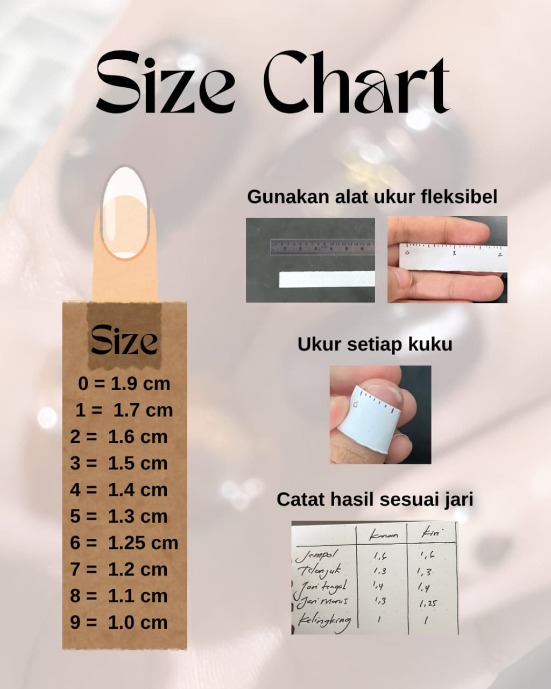

Use a flexible measuring tape (like those used for sewing) and measure the widest point of the nail bed (from sidewall to sidewall). Make sure to always record the measurement in millimeters for precision.
Place a piece of clear tape horizontally across the widest part of your nail. Mark both edges of your nail on the tape with a pen. Then remove the tape and measure the distance between the two marks using a ruler. This is a handy method if you don't have a flexible measuring tape.
This is the most accurate method for press-on nails. You directly try on various sizes of pre-numbered blank nails from the sizing kit provided by the seller. Note the nail number that fits perfectly on each finger, from thumb to pinky.
Gunakan alat ukur fleksibel
